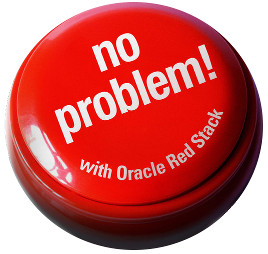
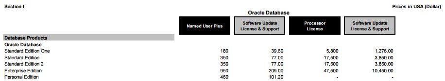
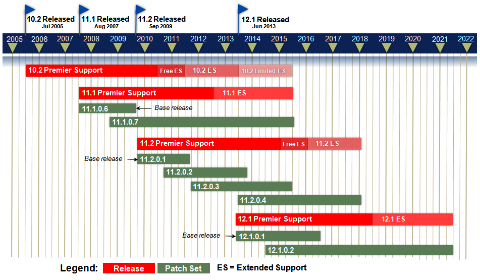
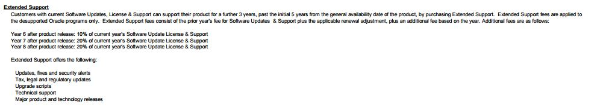

This was first published on https://www.dbi-services.com/blog/you-are-in-standard-edition-one-dont-worry/ (2015-09-19)
Republishing here for new followers. The content is related to the versions available at the publication date.
.

So you opted for Standard Edition One.
But now, you have heard that Standard Edition One is stopped. What are your alternatives?
This information comes from what we can find in oracle.com documents about Standard Edition Two.
Big thanks to Dominic Giles, Mike Dietrich, Tammy Bednar that helped a lot to understand the rules and how to apply them on real customer situations.
If you want to upgrade to 12.1.0.2 (12c patchet 1) then you have to go to Standard Edition Two. 
From the price list, the SE2 costs x3 the price of SE1:
The price list shows the public price when you buy Standard Edition Two.
However, from Oracle Brief DB SE2 you don’t have to pay the difference when going from SE1 to SE2:
It’s clear: if you are in SE1, it’s free to go to SE2 and the maintenance annual cost is only 20% higher.
So, if you are in SE1 the annual cost increases by 20% and:
It’s always difficult to accept changes that are imposed, but when you think that you have bought SE1 at a price that has been set at a time where sockets had 4 cores, then it is easier to accept the new limitations. They make the Standard Edition model sustainable after all.
A lot of customers I know have bought SE1 because they we consolidating their IT on VMWare. Enterprise Edition was a no-go because of the cost to licence all the cores of all servers. And having a dedicated ESX for oracle database is the opposite of consolidation if you have only few databases.
But the price of SE1 is still acceptable when you licence all sockets. And, as long as each server has no more than 2 sockets, SE1 was possible there. Don’t worry, it’s the same rule for SE2. The 2 socket limit is per server.
Yes. Now you can have RAC in SE2 which was not possible in SE1. This brings service high availability to your database: two instances are running on two nodes. One can fail and the service is still there on the other node with access to all data.
But if you have two sockets in your server, you can’t run another instance on another node because of the two sockets limitations. In RAC, SE2 is limited to 2 mono-socket nodes. Here is what you can do:
Don’t forget, the goal is to have at least 8 cores to run the 8 user sessions. More cores (or hyper-threading) will keep-up with background processes, OEM agents, etc. Having two 1s8c16t (1 socket 8 cores 16 threads) servers is a good minimal configuration to use the full power of SE2 RAC.
Note that if you are on VMWare with 2-socket servers, then you can’t use RAC in SE2. RAC in SE2 is limited to one socket per server.
Note that RAC is only for service protection. Data protection is achieved with a standby database. There is no Data Guard in Standard Edition, but there are smart alternatives such as Dbvisit Standby
Less good news for customers that bought the minimum NUP which was 5 in SE1 independently of the number of servers. When you go to SE2 you have a limit of 10 NUP, and it’s per server. It can make a difference if you are on VMWare as you have to count all servers.
You don’t need to upgrade to SE2 if you don’t want to pay the additional 20% for support. 
You can stay in 11.2.0.4 which is in free extended support until end of January 2016:
But then in February 2016, do you want to pay the extended support? 
The cost for extended support is additional 20% after 7 years of initial release. 11gR2 was released on Sept. 2009 which means that the extended support for 11.2.0.4 will be 20% in Sept. 2016 – the same price as the SE2 support.
Conclusion: better to go to SE2 before Sept. 2016 than keep SE1. You have same support for 11.2.0.4 databases and in addition to that you will be able to install and upgrade to latest release. We expect 12.2 to be available in Sept. 2016.
Added Oct. 16th, 2015:
Today Oracle announced that the waived support has been extended to May 2017.
See more info in a new blog post
Did you already upgrade to 12c? Then you are in 12.1.0.1 which is the latest available for SE1.
It’s different case than 11.2.0.4 because there will be no extended support for it. In September 2016, you will have no PSU anymore. You can stay with sustaining support at no additional cost. But if you want more support you can downgrade to 11.2.0.4 and pay extended support, or upgrade to SE2 and upgrade to 12.1.0.2 or 12.2 if it is available at that time. Of course, as we have seen previously, there is no point to stay in SE1 and pay the additional 20% because it’s the same cost to go to SE2.
Conclusion: If you are in 12c SE1, stay in sustaining support (no PSU) or pay additional 20% to get full support and features of new versions through SE2.
If you look at it, except if you don’t want support, you should upgrade to SE2 in 2016.
Think positive: you can run oracle with all SE features on 16 cores dedicated to your users with a reasonable cost, even on VMware. And you can also think to get HA with RAC if you are on physical servers (1 socket) or virtualized with OVM. That was probably unexpected if you bought SE1 several years ago.
SE features are all oracle features that can be seen from application development point of view. EE has lot of features for administration, protection, performance, etc. But the lower cost of SE leaves time and money to find workarounds if you want to do it yourself. SE is a very good product affordable for small companies.
An additional remark. If you plan to buy Standard Edition before the end of the year, then it seems that you have the following choices (prices from public price list) :
Of course, the second solution seems to be the more attractive one, but don’t wait: SE1 will not be available anymore in December 2015.
SQL> select date'2015-12-01' - sysdate "SE1 COUNTDOWN (days)" from dual;
SE1 COUNTDOWN (days)
---------------------
72.4965278
{kind=link}
{kind=link}
{kind=link}
{kind=link}